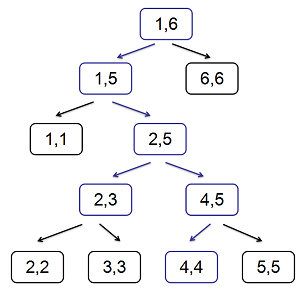

线段树是九条可怜很喜欢的一个数据结构，它拥有着简单的结构、优秀的复杂度与强大的功能，因此可怜曾经花了很长时间研究线段树的一些性质。
最近可怜又开始研究起线段树来了，有所不同的是，她把目光放在了更广义的线段树上：在正常的线段树中，对于区间 $[l, r]$，我们会取 $m = \lfloor \frac{l+r}{2} \rfloor$，然后将这个区间分成 $[l, m]$ 和 $[m + 1, r]$ 两个子区间。在广义的线段树中，$m$ 不要求恰好等于区间的中点，但是 $m$ 还是必须满足 $l \le m < r$ 的。不难发现在广义的线段树中，树的深度可以达到 $O(n)$ 级别。
例如下面这棵树，就是一棵广义的线段树：

为了方便，我们按照先序遍历给线段树上所有的节点标号，例如在上图中，$[2, 3]$ 的标号是 $5$，$[4, 4]$ 的标号是 $9$，不难发现在 $[1, n]$ 上建立的广义线段树，它共有着 $2n − 1$ 个节点。
考虑把线段树上的定位区间操作（就是打懒标记的时候干的事情）移植到广义线段树上，可以发现在广义的线段树上还是可以用传统的线段树上的方法定位区间的，例如在上图中，蓝色节点和蓝色边就是在定位区间 $[2, 4]$ 时经过的点和边，最终定位到的点是 $[2, 3]$ 和 $[4, 4]$。
如果你对线段树不熟悉，这儿给出定位区间操作形式化的定义：给出区间 $[l, r]$，找出尽可能少的区间互不相交的线段树节点，使得它们区间的并集恰好是 $[l, r]$。
定义 $S_{[l,r]}$ 为定位区间 $[l, r]$ 得到的点集，例如在上图中，$S_{[2,4]} = \{5, 9\}$。定义线段树上两个点 $u, v$ 的距离 $d(u, v)$ 为线段树上 $u$ 到 $v$ 最短路径上的边数，例如在上图中 $d(5, 9) = 3$。
现在可怜给了你一棵 $[1, n]$ 上的广义的线段树并给了 $m$ 组询问，每组询问给出三个数 $u, l, r\ (l \le r)$，可怜想要知道 $\sum_{v \in S_{[l, r]}} d(u, v)$。
 Comet OJ
Comet OJ